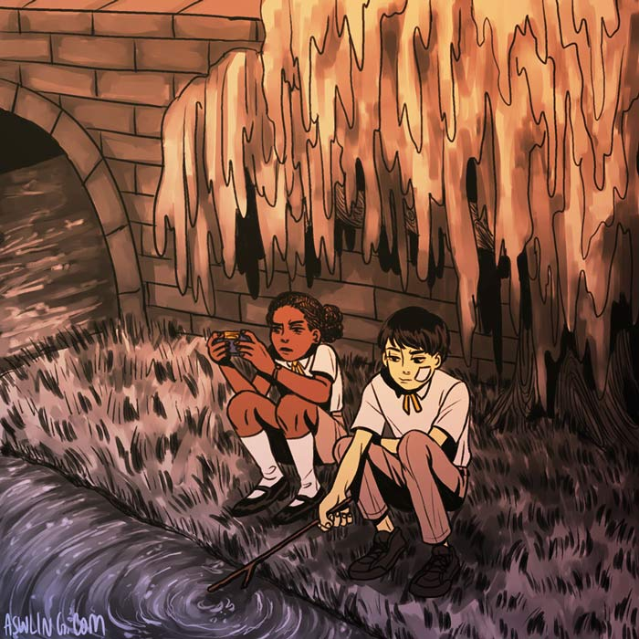
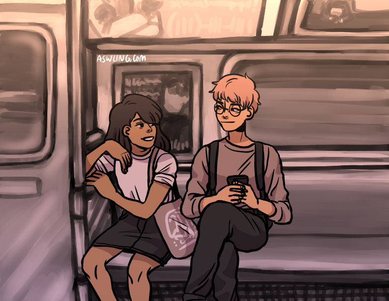
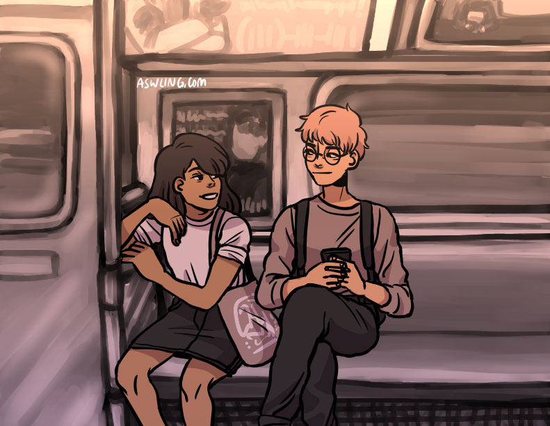
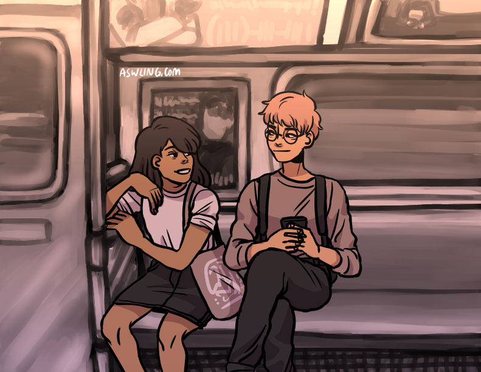
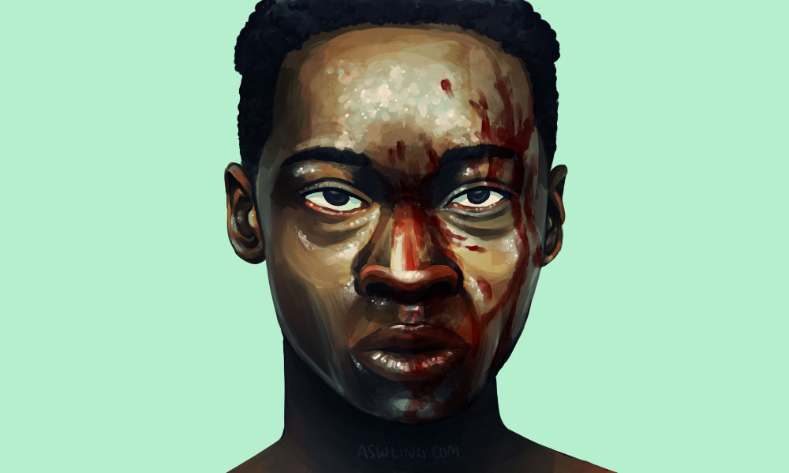

Personal Work
Skills: Illustration, graphic design, animation, web design
Tools: Photoshop, Illustrator, SAI, HTML/CSS, JavaScript
Stuff I made just for fun.
ZAIJIAN (再见) is a simple interactive illustration to commemorate my study abroad experience in Shanghai during Fall 2016. The interactive website can be found here.

An homage to one of my favorite artists, the late Ren Hang.

SHENME THE FUCK (什么THEFUCK) is a short animation made in the middle of my study abroad experience in Shanghai during Fall 2016.

Selection of character and concept illustrations.

 


Fanart of one of my many favorite scenes from Moonlight.
